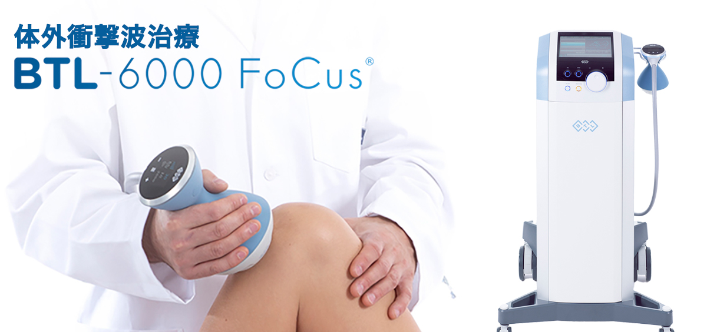
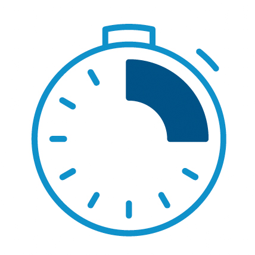
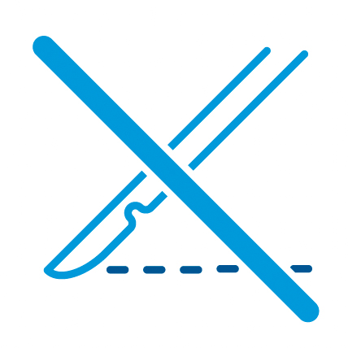
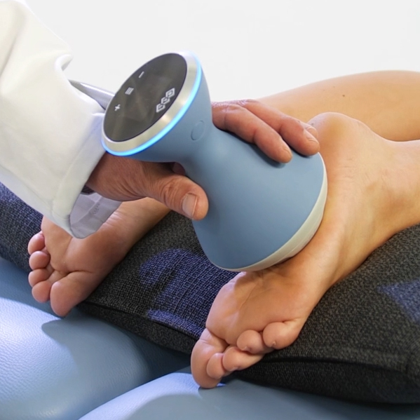
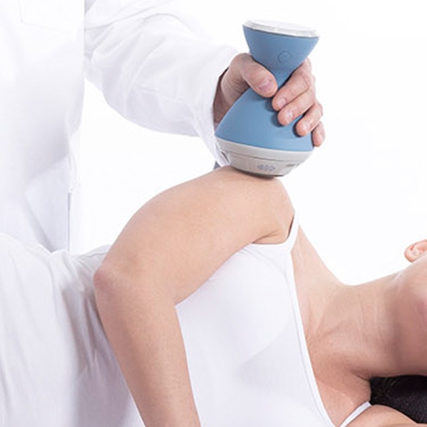
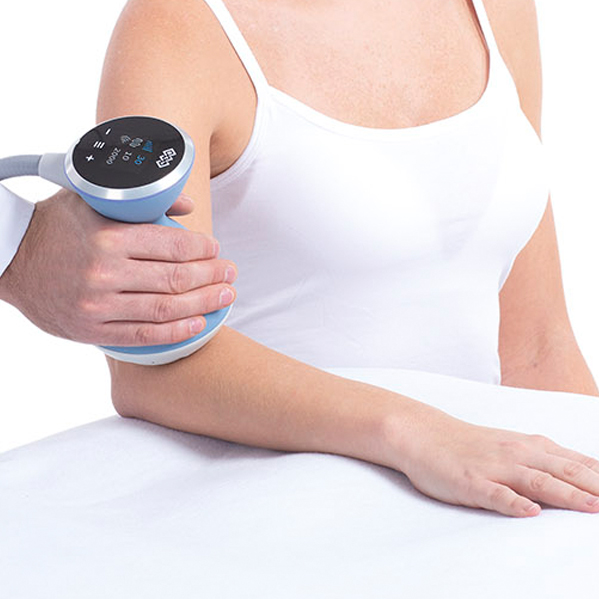
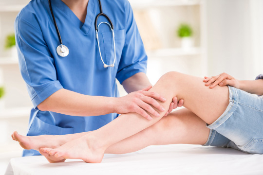
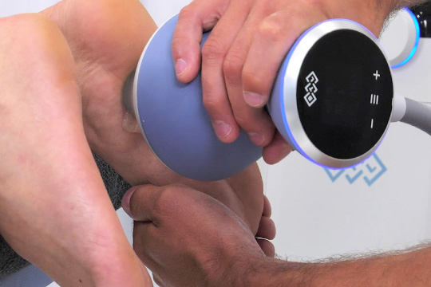
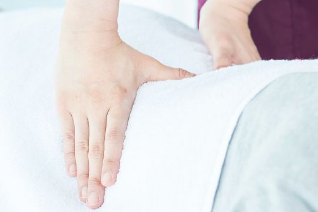

体外衝撃波治療【BTL-6000 フォーカス®】

衝撃波治療とは
衝撃波治療とは、衝撃波を皮膚の上から患部に照射することにより、衝撃波が傷ついた組織に行きわたり、治癒および組織再生を誘発する治療法です。
関節、腱、筋肉すべての慢性痛に優れた効果が期待されます。
- 短い施術時間

体に負荷のかからない短い治療時間で効果が実感できます。 - 持続的な疼痛の緩和患部に衝撃波をあてるだけで、慢性的な痛みを和らげることができます。
- 手術に代わる非侵襲的治療

メスを使わずに、患部にアプローチができる治療です。
衝撃波治療はこんな方におすすめ
- 肩、肘、膝に起こる慢性的な痛みで日常生活がつらい方
- スポーツにより肘や膝などの痛みがある方
- なるべく短い時間で痛みを軽減したい方
- 手術をせずに痛みを軽減したい方
衝撃波治療の効果
- 痛みの軽減
- 組織再生（骨折治癒・腱の再生）
- 石灰化の除去
- 筋肉の硬直を緩和
衝撃波治療が適応となる疾患
体外衝撃波治療が適応となる方は、以下のような疾患や機能障害をお持ちの方です。
- 難治性足底腱膜炎

治療頻度: 週に1回
治療回数: 4～6回 - 膝蓋腱炎
 治療頻度: 週に1回
治療頻度: 週に1回
治療回数: 最大5回 - 石灰沈着性腱板炎

治療頻度: 週に1回
治療回数: 6～8回 - 上腕骨外（骨内）側上顆炎

治療頻度: 週に1回
治療回数: 4～6回
その他
アキレス腱症、五十肩、変形性関節症（大関節/小関節）、無血管性骨壊死、骨髄浮腫症候群、滑液包炎（慢性）、手根管症候群、大転子疼痛症候群、踝骨棘、瘢痕（慢性）、インビンジメント症候群、下肢潰瘍、脛骨過労性骨膜炎、中足骨骨頭痛、筋弛緩、筋痛、離断性骨軟骨炎、偽関節、痙縮、疲労骨折、腱障害、トリガーポイント（深部）、創傷治癒
衝撃波治療の流れ
-
- 1診断
- 診断を行い、患部における痛点を特定します。（必要に応じてMRIやエコーで確認）

-
- 2治療
- 低い出力から始め、お声かけしながら出力を調整いたしますのでご安心ください。

-
- 3治療後
- 集束型衝撃波治療とあわせて、ストレッチ、または手技療法を含む軽いリハビリテーションを行う必要があります。 治療後2日間は激しい運動を避けましょう。

Q&A
- 治療中はどのような体感ですか？
- 痛みがある箇所に圧力を感じますが、照射を続けていく中で徐々に痛みは軽減していきます。
最初は患者様の反応を確認しながら出力を調整していきます。 - 治療期間や治療回数はどのくらいですか？
- 1クール3回、一週間に1回を目処に実施していきます。
通常の治療時間は約8分です。 - 治療の効果はどのくらいであらわれますか？
- 早い方は1回目の治療後から治療効果を実感できます。その後は数週間にわたって効果が持続することが期待できます。
料金
| 種類 | 料金（税込） |
|---|---|
| 保険治療（難治性足底腱膜炎） | 一連 15,000円 ※3割負担の患者様の場合 |
| 自費治療 | 1回 1,100円 |